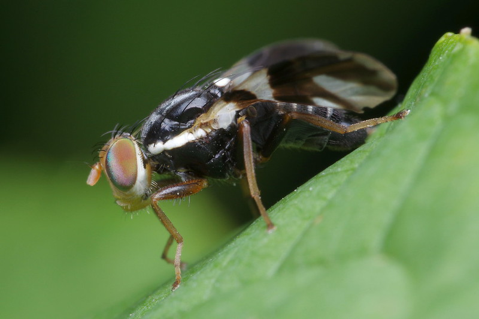

Natural selection is one of the biggest driving forces for evolution. The theory was invented by Charles Darwin and Alfred Russel Wallace. 1 The idea of natural selection is that organisms who are more “fit” for the environment thrive and are able to reproduce, thus passing down their genes. However, the organisms that have traits that are not favorable to their environment end up surviving less, which causes there to be fewer of their genes within the population. 2
A phenomenon called “speciation” occurs when the traits of the new population end up being vastly different than the original species. This in turn makes it so that they can no longer interbreed. There are multiple types of speciation, but the two types we will be focusing on are “allopatric” and “sympatric” speciation.
Allopatric speciation happens when two populations of the same species are isolated from each other due to geographical barriers (such as mountains or rivers). This prevents the two populations from breeding with each other, which then causes the future populations to diverge immensely. 3
(“Allopatric Speciation Schematic“ by Andrew Z. Colvin is licensed under CC BY-SA 4.0/resized from original, border added)
Sympatric speciation occurs when a population decided to take on a different niche (role in the ecosystem) such as eating from a different food source or using a different shelter compared to the other populations of the same species. Unlike allopatric speciation, there is no geographic isolation. One example of sympatric speciation is apple maggot flies. They used to only lay their eggs on hawthorns, but now there are populations that lay their eggs on apples. This causes the population that lays eggs on hawthorns to only mate with other maggot flies that lay eggs on hawthorns, and vice versa for apple maggot flies. 4
Image of an Apple Maggot Fly
Credit: Pascal Gaudette (Doundounba on Flickr, CC BY-NC-SA 2.0/resized from original, border added)
{kind=link}